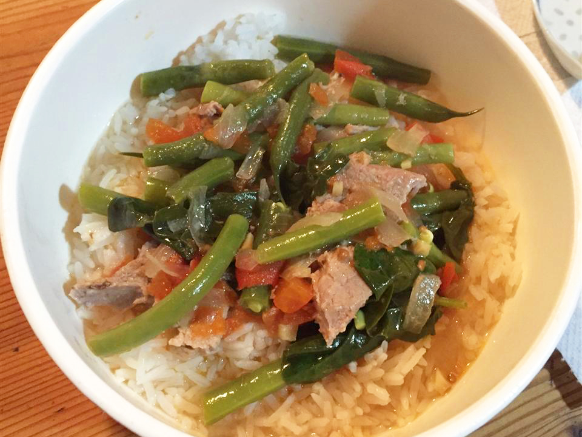

SINIGANG

Description
Pork sinigang is my absolute favorite filipino dish. One of the most delicious things about sinigang is that you can add almost any kind of leafy green vegetable like bok choy, baby bok choy, or spinach. My family has always included a lot of green vegetables. In addition, we add radishes. Lots of radishes. Then the end result is a full complete meal. Try using pork country ribs as well which is absolutely delicious.
Ingredients:
- 1 tablespoon vegetable oil
- 1 small onion, chopped
- 1 teaspoon salt
- 1 (1/2 inch) piece fresh ginger, chopped
- 2 plum tomatoes, cut into 1/2-inch dice
- 1 pound bone-in pork chops
- 4 cups water, more if needed
- 1 (1.41 ounce) package tamarind soup base (such as Knorr®)
- ½ pound fresh green beans, trimmed
Steps:
- Step 1
Heat vegetable oil in a skillet over medium heat. Add onion; cook and stir until softened and translucent, about 5 minutes. Season with salt.
- Step 2
Stir in ginger, tomatoes, and pork chops. Cover and reduce heat to medium-low. Turn the pork occasionally, until browned.
- Step 3
Pour in water and tamarind soup base. Bring to a boil, then reduce heat and simmer until the pork is tender and cooked through, about 30 minutes.
- Step 4
Stir in green beans and cook until tender.